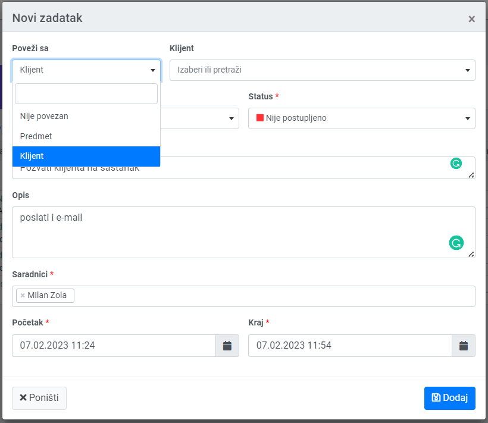
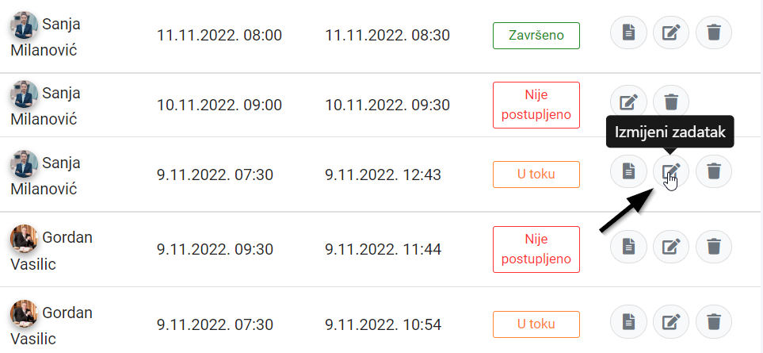

U Legalistik aplikaciji, sve zadatke možete dodavati, mijenjati i brisati unutar samog Kalendara gdje imate vizuelni pregled zadataka ili u dijelu Zadaci, gdje su zadaci predstavljeni kao hronološki poredana lista.
Rad sa zadacima unutar Kalendara objašnjen je ovdje.
Za listu svih zadataka, kliknite na Zadaci u meniju na lijevoj strani. Lista se može filtrirati po svim kolonama, uključujući i saradnike:

Saradnici mogu da vide samo zadatke koji su im dodijeljeni.
Dodavanje novog zadatka #
Zadatke možete dodavati iz samog predmeta, kartica Zadaci, i tad će biti vezan za taj predmet, ili iz dijela Zadaci u meniju na lijevoj strani, odakle možete dodavati zadatke vezane za predmete, klijente ili da budu samostalni:

Izmjena i brisanje #
Izmjenu predmeta, zadatka kao i njegovo brisanje možete izvršiti klikom na ikonicu desno od zadatka:
